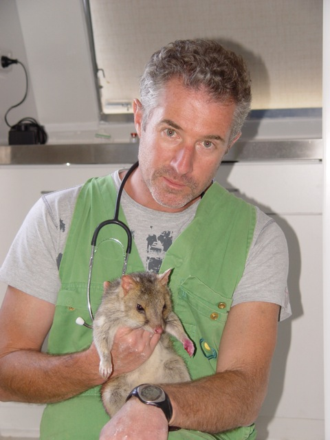
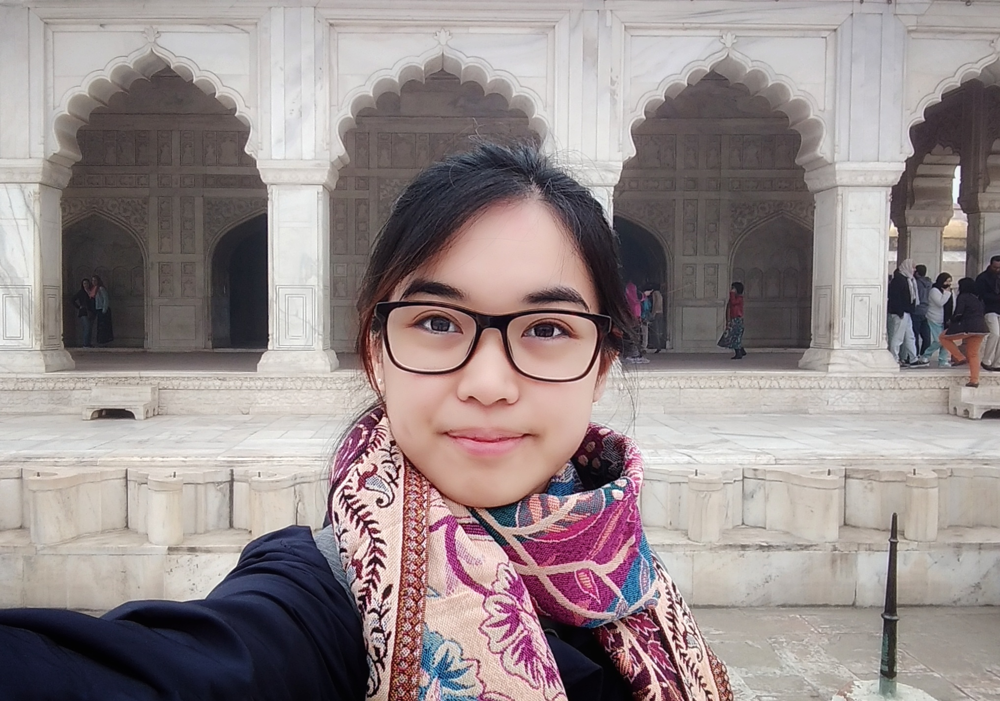

Founders

Dr. Clive A Marks

Hien Vu

Daniel Schulz

Carlos Melegrito
We're building tools to help make wildlife management more productive.
Dr. Clive A Marks
Hien Vu
Daniel Schulz
Carlos Melegrito
Prof Andrea Robinson

Prof Kristian Helmerson